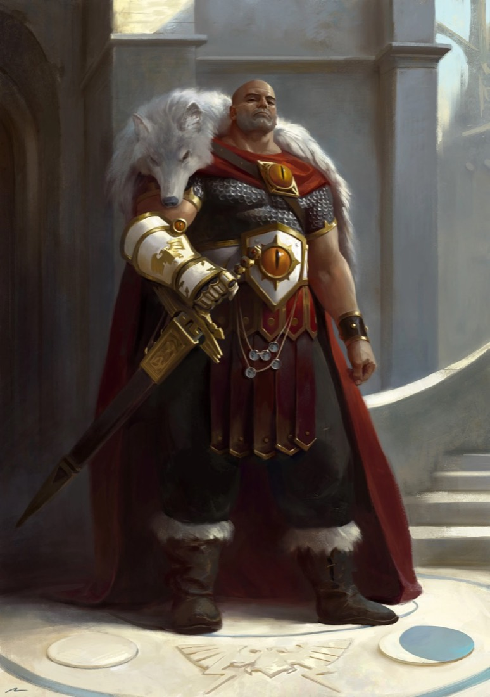

Great Crusade
| Great Crusade | |
|---|---|
| Part of the founding of the Imperium of Mankind | |
 Votive painting of the Emperor of Mankind at the head of the Legions | |
| Date | c. 798.M30 to 005.M31 (about two centuries; a little over 203 years by the Administratum reckoning) |
| Location | The Milky Way, from the Sol System outwards across all five future Segmentae |
| Result | Reunion of several million human worlds; extermination or subjugation of many xenos realms; collapse into the Horus Heresy |
| Belligerents | |
| Imperium | Independent worlds and xenos Independent human worlds and realmsThe Interex and their Kinebrach allies |
| Commanders and leaders | |
| Units involved | |
| Interex garrisons on XenobiaRangda warfleets of the Halo Stars | |
| Strength | |
| The Interex: a prosperous civilisation of about thirty systems | |
| Casualties and losses | |
| Not tallied; the Rangdan Xenocides alone cost over 80,000 Legionaries and uncounted millions of soldiers[2] | Whole species and civilisations; the Interex destroyed at Xenobia in 003.M31; the Ork empire of Ullanor broken |
The Great Crusade, also called the Crusade of Reunion in older Mechanicus texts, was the war of reconquest that carried the Emperor of Mankind and his armies from Terra into the galaxy, beginning in about 798.M30 and lasting a little over two centuries. Its stated purpose was to find every human world that had survived the Age of Strife, bring it under a single rule, and destroy those alien powers judged a danger to Mankind.[3] Its instruments were the Space Marine Legions and their primarchs, the soldiers of the Imperial Army, the war-engines of the Titan Legions and the vast fleets of the Mechanicum of Mars.
At its height the crusade fielded 4,287 primary Expeditionary Fleets and more than 60,000 secondary groups, with a further 372 fleets refitting in the Sol System and the hub worlds of the inner Imperium.[1] Each fleet carried, besides soldiers, a corps of Iterators, whose task was to persuade conquered peoples of the Imperial Truth, and a train of Remembrancers, artists and chroniclers charged with recording the war for posterity.[4] In the last years of the crusade some 4.3 million Remembrancers were serving with the fleets.
The crusade is remembered in Imperial tradition as a golden age, the one period in which the Emperor ruled in person and Mankind believed itself to be marching towards a brighter future. Historians of the Logos Historica Verita are more guarded. The Legions' appetite for recruits, the haste with which gene-seed was cultured to feed them, and the growing distance between the primarchs and the Emperor planted flaws that Chaos later exploited.[5] The crusade ended in the Horus Heresy, when the Warmaster Horus turned on the Emperor in 005.M31.
Background
[edit]The Emperor's purpose
[edit]By the end of the Unification Wars the Emperor held Terra, the Mechanicum of Mars had accepted the Treaty of Olympus, and the first prototype Legionaries were in the field. The Emperor's aim was not conquest for its own sake. Imperial sources record his judgment that Mankind, divided and unprotected, would not survive the hostile galaxy, the predations of the Warp or the avarice of other species, and that only a single human realm could withstand them.[3] The crusade was to be the first stage of a longer plan, whose completion lay in the Imperial Webway project begun beneath the Imperial Palace and left unfinished by the Heresy.[a]
The Age of Strife had left human space in ruins. Warp storms, which had isolated worlds for some five thousand years, were ebbing, and the Emperor chose this moment to move. Navigators and astropaths could again carry fleets and messages across the void, and the first reports of lost colonies began to reach Terra.[5]
Preparations
[edit]The first fleets were built in the orbital foundries of Terra, in the great ring of shipyards around Mars and at the docks of Saturn, under the eye of the Mechanicum's forge-wrights. Their numbers were swelled when the ship-masters of the Saturnyne Dominion joined the Imperium after their alien overlords were overthrown, and again as new yards were established at Voss, Lorin, Cypra Mundi and elsewhere.[1] The earliest Legions were raised from the people of Terra. Recruits were taken from the survivors of the Unification Wars, and from them the first companies of what the sources call the "Terran Legions" were formed.
Alongside the Legions the Emperor raised the Imperial Army, a force of ordinary soldiers drawn from the conquered peoples of Terra and, later, of every world brought into the Imperium. It was meant to garrison and support rather than to lead the assault. The oldest regiments, descended from the genetically engineered infantry of the Unification Wars, were later remembered as the "Old Hundred".[6]
The Thunder Warriors, the first gene-engineered soldiers of the Unification Wars, did not march. The accepted account, set down in the later testimony of the Adeptus Custodes, is that they were culled on the Emperor's order once Terra was won, because their bodies and minds were failing and they could not live in peace. Older Imperial records, and the popular legend, say instead that the last of them died to a man at Mount Ararat. Chroniclers now treat the Ararat story as an official fiction.[7] See Unification Wars.
Organisation
[edit]The Expeditionary Fleets
[edit]
At first there was a single fleet, the Principia Imperialis, commanded by the Emperor himself. As the crusade widened, the War Council on Terra authorised more. Each was given a number, and the number was stamped on every world it found. A planet first recorded as 63-19, for example, was the nineteenth world discovered by the 63rd Expedition, the fleet commanded by Horus. In this way the Administratum could trace a fleet's course from the order in which its worlds had been registered.[1]
The composition of a fleet was never fixed. Regiments of the Imperial Army, auxiliaries, squadrons of the Armada Imperialis, Titan Legions and detachments from the Space Marine Legions could be attached or withdrawn as strategy demanded. A typical fleet was led by a Lord Commander drawn from the Army, with a Master of the Fleet commanding its ships. Where Space Marines were present, the senior Legionary assumed overall command, whatever the rank of the mortal officers beside him.[1]
The great fleets that carried a primarch and the main body of his Legion were rare. Most Expeditionary Fleets had no Space Marines at all and followed in the wake of the great thrusts, bringing worlds that offered little resistance into compliance. Records preserve a few of the better known. The 3rd Expedition, a force of the Imperial Fists, took the void cities of the Consus Drift; the 4th and 7th, under the Dark Angels, cleared Ork holdings on the edge of the Grail Abyss; the 28th was commanded by Fulgrim; and the 63rd, the most closely chronicled, was the host of Horus and the Luna Wolves.[1][4]
Rogue Traders Militant
[edit]Ahead of the main fleets ranged smaller flotillas led by the Rogue Traders Militant. Many were former rulers of Terran or colonial realms, offered a choice between submission and death. Those who accepted took the Emperor's Warrant of Trade and went out to scout the dark beyond the frontier, accompanied by their own troops and by whatever the Emperor had ceded them. They could expect no relief if they met a stronger enemy, and they were forbidden to return to Terra. Many vanished unrecorded.[1]
Legions and primarchs
[edit]The Legions were the spearhead. Each Legion was created from the gene-seed of one primarch, and each was organised into Chapters of roughly a thousand warriors, subdivided into battalions and companies; the exact structure varied from Legion to Legion and with the fortunes of war.[8] Until its primarch was found, a Legion was led by a commander appointed by the Emperor and fought in the Terran manner. On rediscovery, the primarch commonly remade it in his own image, changing its name, its colours, its tactics and often the world from which it drew recruits.[8]
Compliance
[edit]Doctrine
[edit]Imperial doctrine described the process of bringing a world into the Imperium as compliance. A fleet that discovered a human world first opened contact and presented its terms: the world was to acknowledge the Emperor's rule, accept the Imperial Truth, pay an agreed tithe in soldiers and materiel, and allow an Imperial garrison. A world that complied peacefully was left much of its own government. A world that refused was warned, and then assaulted.[3]
The Emperor is recorded as having preferred persuasion, and the Iterators in each fleet were charged with offering the benefits of union: security, technology and an end to the isolation of the Age of Strife.[4] In practice many Legions had little patience for argument. Compliance by arms was usual wherever a local ruler would not yield, and campaigns against such rulers were remembered as some of the most savage of the crusade.[6]
The Imperial Truth
[edit]The ideology of the crusade was the Imperial Truth, a doctrine of rationalism and progress. It rejected all gods and spirits, treated religion as a relic of the Age of Strife, and presented the Emperor as a leader rather than a divinity. Conquered worlds were expected to close their temples and replace their priests with the Iterators' lectures. The Emperor repeatedly disclaimed godhood, and the Legions that revered him in secret were reprimanded.[4] The suppression of faith made the crusade's moral claim inseparable from its military one, and it brought unrest to worlds where the old rites had been all that had held society together.
Pax Imperialis
[edit]Illumination was understood as the price of peace, and the price was often paid in blood. Alongside open war the Imperium used quieter tools. Agents of Malcador the Sigillite, the assassin temples that later became the Officio Assassinorum, informants and a handful of forbidden weapons held in the Legions' armouries were used against those who plotted treachery under the guise of loyalty.[3] The Emperor judged that the Chaos powers would unite against him if humanity were not ready, and that time was short.
Xenos policy
[edit]The Emperor took the view, shared by most primarchs, that nearly every alien species Mankind had met had proved hostile, and that extermination was the usual remedy. Expeditionary Fleets were authorised to exterminate any xenos power that threatened human settlement, and to seize its worlds for resettlement. The few exceptions are noted in the archives as curiosities: the Interex, a human realm that had chosen to live alongside aliens, was in the end destroyed for that choice.[6]
Rediscovery of the primarchs
[edit]
The twenty primarchs had been scattered across the galaxy as infants shortly after their creation. The Emperor's efforts to retrieve them occupied much of the crusade. They were found in widely different conditions, some as rulers, some as outcasts, and none as the Emperor had intended. When each was rediscovered he was given command of the Legion made from his gene-seed.[8]
The order of discovery is not wholly clear, and Imperial sources disagree about several dates. Horus was the first. Rogal Dorn is recorded as the seventh. Alpharius was the last, and the circumstances of his return are contested. The Legions of two primarchs, the II and the XI, are expunged from every record.[8][5]
| Primarch | Legion | Homeworld | Approx. date | Notes |
|---|---|---|---|---|
| Horus | XVI, Luna Wolves (later Sons of Horus) | Cthonia | c. 801.M30 | First found; commanded the Principia Imperialis in the Emperor's absence |
| Leman Russ | VI, Space Wolves | Fenris | c. 819.M30 | Challenged the Emperor to three contests before swearing fealty |
| Unrecorded | II | Expunged | c. 821.M30 | Records sealed or destroyed |
| Ferrus Manus | X, Iron Hands | Medusa | c. 824.M30 | Overlord of Medusa's rival techno-clans |
| Fulgrim | III, Emperor's Children | Chemos | c. 830.M30 | Had rebuilt his ruined mining world |
| Vulkan | XVIII, Salamanders | Nocturne | c. 832.M30 | Raised by a smith; earned the Emperor's regard in a trial of strength |
| Rogal Dorn | VII, Imperial Fists | Inwit | c. 835.M30 | Seventh found; met the Emperor aboard the Phalanx |
| Roboute Guilliman | XIII, Ultramarines | Macragge | c. 837.M30 | Ruled the Realm of Ultramar, the Five Hundred Worlds |
| Magnus the Red | XV, Thousand Sons | Prospero | c. 840.M30 | Found by a strong psychic signature |
| Sanguinius | IX, Blood Angels | Baal | c. 843.M30 | Foresaw the Emperor's arrival |
| Lion El'Jonson | I, Dark Angels | Caliban | c. 846.M30 | Leader of the knightly orders of Caliban |
| Perturabo | IV, Iron Warriors | Olympia | c. 849.M30 | Ordered the decimation of his Legion on assuming command |
| Mortarion | XIV, Death Guard | Barbarus | c. 854.M30 | Had overthrown the sorcerer-lords of his world |
| Lorgar | XVII, Word Bearers | Colchis | c. 857.M30 | Archpriest of the Covenant of Colchis |
| Jaghatai Khan | V, White Scars | Chogoris | c. 865.M30 | Had united the steppe tribes |
| Konrad Curze | VIII, Night Lords | Nostramo | c. 896.M30 | Plagued by visions of his own fate |
| Angron | XII, World Eaters | Nuceria | c. 899.M30 | Rescued against his will from a slave revolt |
| Corvus Corax | XIX, Raven Guard | Deliverance | c. 922.M30 | Freed his prison-moon before the Emperor came |
| Unrecorded | XI | Expunged | c. 927.M30 | Records sealed or destroyed |
| Alpharius | XX, Alpha Legion | Disputed | c. 981.M30 | Accounts of his return contradict one another |
The effect of each discovery on the crusade was immediate. A primarch was both a general and a source of gene-seed: with his genetic material the Emperor could culture organs for far larger numbers of Legionaries than the Terran stock had allowed, and a Legion that had been starved of recruits could now expand rapidly. In the later decades of the crusade a new Legionary could be made and trained in as little as a year.[8] This speed was a necessity, but it also meant that recruits were chosen with less care, and Legions that raised their warriors in haste accumulated flaws in their gene-seed and in their discipline.[10]
Horus was the first of the Emperor's sons to return and the one who stood closest to him. The records of the 63rd Expedition show a bond of close friendship between them, and during the first decades of the crusade Horus often held the command of the Principia Imperialis when the Emperor was away searching for another son.[4] It was widely understood, and not only by Horus, that this made him the first among the primarchs.
Course of the crusade
[edit]Early years, 798–850.M30
[edit]The first decades pushed outward from the Sol System in a series of short campaigns against isolated human worlds. Many had slid into barbarism, some had retained scraps of the technology of the Dark Age, and a few were ruled by cults whose rites disturbed the Iterators. The Legions grew as primarchs were found, and the first Expeditionary Fleets were launched under their command. The crusade now moved in three great thrusts across the galaxy: one under the Emperor, one under Horus and one under Ferrus Manus.[1]
The Rangdan Xenocides
[edit]The most terrible war of the early crusade was fought against the Rangda, a xenos power whose domain lay at the edge of the galaxy, among the Halo Stars. The three Rangdan Xenocides, fought between about 839.M30 and 890.M30, called for the intervention of the Emperor in person and for at least nine Legions, more than a dozen Titan Legions, houses of the Imperial Knights and hundreds of thousands of Army troops.[2] The sources record the loss of over eighty thousand Legionaries in the war and of uncounted millions of mortal soldiers. The Third Xenocide, about 890.M30, cost the Imperium some fifty thousand Space Marines in preventing the destruction, it is said, of much of the northern Imperium.
Our knowledge of the war is poor. The Dark Angels, who bore the heaviest losses, ordered the records sealed or destroyed for the good of the Imperium, and what survives is fragmentary and contradictory.[2][b] The heavy losses sustained by the Dark Angels were a factor in the later growth of the Ultramarines, which by 899.M30 was nearing the position of the largest Legion.
Compliance campaigns
[edit]Between the great wars the Legions carried out a continuous series of compliance campaigns. The records list many. In the mid-800s the Iron Warriors, Imperial Fists, Dark Angels and White Scars jointly broke the fortresses of the Araaki Spiral. In 865.M30 the Imperial Fists under Rogal Dorn fought a vast Ork host at Rennimar, while the Death Guard and the Space Wolves besieged the Ork Over-Tyrant on a neighbouring front. In 903.M30 the Word Bearers brought Khur into compliance; their conduct there, including the raising of the great city of Monarchia in the Emperor's honour, was rebuked by the Emperor, an episode that deeply wounded Lorgar.[6][9]
Not every campaign was a conquest of an enemy. In 848.M30 the world of Sarosh, brought into the Imperium by the White Scars, was later found to be failing every benchmark of compliance under a self-serving bureaucracy, and the Imperium moved against it. At Davin, in 941.M30, the Luna Wolves chose to leave the warrior tribes mostly intact after they had impressed Horus with their courage, a decision later to have fateful consequences.[9]
The Interex and the Kinebrach Anathame
[edit]The 63rd Expedition first encountered the Interex, a prosperous human civilisation of about thirty systems, after the Luna Wolves cleared the prison world the Imperium called Murder. The Interex had chosen to live alongside aliens, and were allied with the simian Kinebrach, whom they regarded as junior partners. Wary of the Imperium's intentions, they suspected the crusaders of allegiance with Chaos.[4]
While a delegation led by Horus negotiated with the Interex on the world of Xenobia, a Kinebrach blade known as the Anathame was stolen from the museum of the Hall of Devices. The Interex held the Imperials responsible, and fighting followed. In fact the blade had been taken by Erebus, First Chaplain of the Word Bearers, who had already turned to Chaos and had been told that Horus could not be won without it. The Interex were destroyed by the Luna Wolves in what is called the First War of Xenobia (003.M31), their Kinebrach-trained sorcery and psychic weapons leaving even Legionaries dead within hours of contact.[4][9]
Ullanor
[edit]The greatest triumph of the crusade was won on Ullanor, the seat of the largest Ork empire that Mankind had yet met. Its overlord, Urlakk Urg, ruled many worlds from Ullanor Prime. The assault was commanded by Horus and drew on several Legions, among them the Luna Wolves, the White Scars and the Ultramarines, together with millions of Imperial Army soldiers, a hundred Titans of the Legio Mortis and hundreds of ships of the Armada Imperialis.[11] The Ork empire was broken and the survivors scattered, though many drifted into distant stellar regions where they long remained a source of trouble. The Alpha Legion followed the remnants into the Kayvas Belt in 002.M31.[9]
The victory was celebrated in the Triumph of Ullanor, in which the Emperor declared it the greatest of the crusade. There, according to the Triumph rolls, he announced that he would no longer lead the crusade in person and would return to Terra to undertake a work of great importance. He did not tell the primarchs what it was.[11]
Council of Nikaea
[edit]In 001.M31 the Emperor summoned a conclave on Nikaea to settle a dispute over the use of psychic power. Libraries of evidence had been gathered. Expeditionary Fleets found, again and again, worlds in the grip of sorcerous cults, and the Legions had themselves begun to enlist psykers as Librarians. The primarch Magnus the Red spoke for the use of psychic gifts. Mortarion, who knew from his own world the danger of Warp sorcery, and Leman Russ, who thought it dishonourable, spoke against.[12]
The Emperor's judgment, the Decree Absolute, sanctioned the Navigators and astropaths under strict centralised control but forbade the use of psychic power as sorcery, which is to say bargaining with the entities of the Warp. The Librarius of the Legions was disbanded and its warriors returned to the line. The same council is also recorded as ordering each Legion to establish the office of Chaplain, on the pattern of the Word Bearers, to keep its warriors faithful to the Imperial Truth.[12] Magnus, whose Legion was affected most, accepted the edict, but his Thousand Sons continued to study the Warp in secret.
The Warmaster
[edit]At Ullanor the Emperor named Horus Warmaster, a new rank that gave him supreme authority over the armed forces of the Imperium, Legions and Army alike, including the other primarchs.[11] The appointment confirmed Horus's standing as the first of the Emperor's sons and was greeted as a deserved honour by the Luna Wolves and by most of their brothers. Some primarchs resented it, among them Angron, Konrad Curze and Perturabo.[4] In 003.M31 the Luna Wolves were renamed the Sons of Horus at the Warmaster's own request.
The Emperor's withdrawal to Terra left the crusade in Horus's hands. In his place he established the Council of Terra, a body of senior officials that became the High Lords of Terra and the model of the later Administratum, with Malcador the Sigillite as its first among equals.[3] To many Legionaries the change meant that the Imperium they had won was being handed to Terran bureaucrats. A widespread, erroneous belief grew that the Legions would be disbanded or reduced to the status of peacekeepers once the crusade was done.[4] With the Emperor out of sight, many Legionaries began to speak of loyalty to their primarch rather than to the Emperor.
Fractures
[edit]The faults in the crusade had begun long before Horus's fall. The Night Lords and the World Eaters were notorious for the severity of their compliance actions. The Thousand Sons' study of knowledge gave way, under the influence of Tzeentch, to the open use of sorcery. The Word Bearers' belief in the Emperor's divinity, which he rejected, led to the rift with Lorgar. Distances of years and the interval between orders and their execution allowed the Legions and their commanders to act with a great deal of independence.[5]
The loss of the Emperor's presence meant there was no authority to hold the primarchs together. The Imperial Army, essentially a force of ordinary soldiers, garrisoned the conquered worlds, leaving the Legions free to push on. Imperial scholars note that this arrangement, though efficient, bound the Army's loyalty to the individual Legions it served.[6]
End of the crusade
[edit]
The Warmaster's undoing began on the moon of Davin in 004.M31, where he was struck by the Kinebrach Anathame, stolen from the Interex and wielded by the Nurgle-tainted governor Eugen Temba. The blade's poison was beyond the power of his Legion's surgeons, and in desperation the captains of the Luna Wolves took him to the Serpent Lodge on Davin's moon, where its priests healed him by sorcery. During the ritual his mind was taken into the Warp, where Erebus showed him a vision of an Imperium in which the Emperor was worshipped as a god, and persuaded him that his father's work would end in ruin.[4] Horus returned healed and corrupted.
The rebellion followed quickly. In 004.M31 the Thousand Sons' attempt to warn the Emperor by psychic means breached the wards of his secret work beneath the Palace, and the Space Wolves were sent against Prospero. In 005.M31, on Isstvan III, the Warmaster's forces carried out the atrocity that marked the formal beginning of the Horus Heresy, and in 007.M31 the Ultramarines were attacked by the Word Bearers at Calth. The Imperium that had been built over two centuries was divided in a matter of months.[9]
The war that followed lasted nine years and ended with the Siege of Terra in 014.M31. The Emperor was mortally wounded and placed on the Golden Throne; the surviving loyalist Legions were reorganised in the Great Scouring and the Second Founding, and the crusade, in the sense of a steady advance, was never resumed.[13]
Legacy
[edit]The Imperium of the 41st millennium is a creature of the crusade. Its borders, its great fortress worlds, the sector and segmentum divisions of the Administratum and much of its military tradition derive from the compliance campaigns of the era.[3] The numbering of the Expeditionary Fleets survives in the names of many worlds. The Legions, though broken, are remembered in the Chapters that descend from them.
The crusade also left a darker inheritance. The Imperial Truth was abandoned, and its absence gave rise to the Imperial Cult. The extermination of xenos realms and the destruction of human societies that refused the Emperor's terms, whatever their justification at the time, set a precedent that later rulers have not hesitated to invoke. Estimates of the human lives lost or enslaved in the crusade vary by orders of magnitude, and the Administratum has never attempted a count.[6]
The Era Indomitus has also reopened the crusade's records. The Lord Commander's archivists have corrected several earlier Imperial histories against the testimony of the Custodes and the Mechanicum, and Belisarius Cawl's Ultima Founding of Primaris warriors is described in his own notes as the first mass creation of Astartes since the crusade itself.[14]
In the Era Indomitus the Lord Commander Roboute Guilliman has called for a new crusade, the Indomitus Crusade, and has compared it openly to the first.[15]
Timeline
[edit]| Date | Event |
|---|---|
| 712.M30 | End of the Unification Wars on Terra. |
| 739.M30 | The Treaty of Olympus with the Mechanicum of Mars. |
| c. 792.M30 | The primarchs are scattered across the galaxy. |
| 798.M30 | The crusade departs the Sol System. |
| 801.M30 | Horus found on Cthonia, first of the primarchs. |
| 803.M30 | Sedna campaign; the Sol System secured. |
| 819–857.M30 | Leman Russ, Ferrus Manus, Fulgrim, Vulkan, Rogal Dorn, Roboute Guilliman, Magnus the Red, Sanguinius, Lion El'Jonson, Perturabo, Mortarion and Lorgar found. |
| c. 839–890.M30 | The Rangdan Xenocides. |
| 865–922.M30 | Jaghatai Khan, Konrad Curze, Angron and Corvus Corax found. |
| 941.M30 | Davin brought to compliance. |
| 963.M30 | Razing of Monarchia; Lorgar rebuked. |
| 981.M30 | Alpharius, the last primarch, takes command of the Alpha Legion. |
| c. 999–000.M31 | The Ullanor Crusade; Horus named Warmaster. |
| 001.M31 | The Council of Nikaea. |
| 003.M31 | War with the Interex; the Luna Wolves renamed Sons of Horus. |
| 004.M31 | Horus falls on Davin; the Burning of Prospero. |
| 005.M31 | The Isstvan III atrocity ends the crusade. |
See also
[edit]Notes
[edit]- ^ Older Imperial accounts say the Golden Throne was an ancient machine unearthed beneath the Palace. The accepted account, from the testimony of the Custodes and the Sigillite's archive, is that the Emperor and the Mechanicum built it for the Webway project, and that it was repurposed to keep him alive only after the Siege of Terra.
- ^ Imperial accounts differ even over what the Rangda were. A few blurred picts of fallen warriors and some Mechanicum fragments survive; the First Legion's own archives were withheld at the time and have not been opened since.
References
[edit]- ^ a b c d e f g h Register of the Expeditionary Fleets (c. 005.M31). Departmento Cartographicae, Terra.
- ^ a b c Rangdan Interdiction Files (c. 892.M30, withheld). Dark Angels Legion, Caliban.
- ^ a b c d e f Codex Imperialis (rev. 980.M41). Adeptus Terra.
- ^ a b c d e f g h i j Sindermann, Kyril (c. 004.M31). Remembrances of the 63rd Expedition. Remembrancer Order.
- ^ a b c d Chronicles of the Heresy (sealed). Logos Historica Verita, Terra.
- ^ a b c d e f Lexicanum Martialis. Officio Militaris.
- ^ Valdor, Constantin (c. 014.M31). Testament of the Ten Thousand. Adeptus Custodes (sealed; excerpts released c. 999.M41).
- ^ a b c d e f Liber Primarchus (M32, revised M41). Administratum Archive, Terra.
- ^ a b c d e f Chronology of the Final Years of the Great Crusade (c. 007.M31, compiled by the agents of Malcador). Administratum Archive, Terra.
- ^ Guilliman, Roboute (c. 019.M31). Codex Astartes. Macragge.
- ^ a b c Triumph Rolls of Ullanor (000.M31). Remembrancer Order.
- ^ a b Acta of the Council of Nikaea (001.M31). Adeptus Terra Archive.
- ^ Valdor, Constantin (c. 014.M31). Testament of the Ten Thousand. Adeptus Custodes (sealed).
- ^ Cawl, Belisarius (c. 999.M41). Notes on the Ultima Founding. Mars.
- ^ Records of the Indomitus Crusade (ongoing). Office of the Lord Commander.
Further reading
[edit]- Sindermann, Kyril (c. 004.M31). Remembrances of the 63rd Expedition. Remembrancer Order. The finest surviving first-hand account of a single fleet.
- Oliton, Mersadie (c. 005.M31). Chronicles of the Luna Wolves. Remembrancer Order. The Legion's history from the Warmaster's own circle.
- Liber Primarchus (M32, revised M41). Administratum Archive, Terra. Entries on each of the twenty.